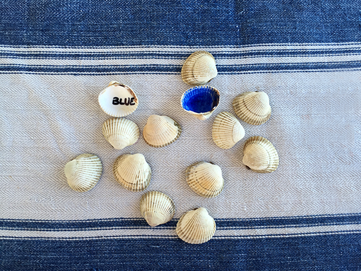

Summer memory game. Colors and their names in a foreign language.



Yesterday our summer team, which involves Carolina and Alvaro, was painting wooden discs. The preparation of the discs,to drill the holes, was actually more fun than…
Read more →
From a piece of cardboard, we have tinkered a mini loom. For the separation of the individual threads we took spirals to binding booklets. Below we…
Read more →
As in the post we made some pendants. This time colored with the tennis of napkins ( using wooden glue).
Read more →
Carolina puts the last two cards to complete the house of cards.
Read more →

A great job for summer holidays. A caterpillar bookmark that grows. For each book you read the caterpillar gets a new circle. On the back of…
Read more →